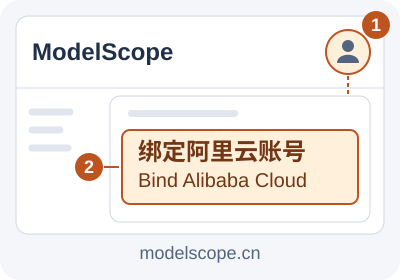

开始第一次对话。
准备一台 Android 8.0+ 手机、网络和模型 API 凭据。无需注册 Mochi 账号，也不必先装扩展。
1. 安装老莫
大多数手机选 ARM64。打开 APK，如果 Android 提示，请允许当前下载应用安装软件。升级时使用相同签名渠道覆盖安装，不要卸载或清除数据。
其他架构与通用版
功能完全相同。不确定架构时选通用版，体积会更大。
不必一次授予所有权限。先用文字，等需要语音、提醒等功能时再按提示授权。
2. 连接 LLM 模型
推荐魔搭 ModelScope，用免费 API 额度入门。在老莫中打开设置 → AI 连接 → 添加 AI 连接，选择魔搭。
- 注册或登录魔搭，在右上角头像菜单中绑定阿里云账号（官方绑定教程）。
- 打开 Access Token 页面，获取该魔搭账号的 Token 并粘贴到老莫。
- 选择下拉推荐模型并保存；也可从模型库复制支持 API 和工具调用的完整 ID，选择自定义填写。

第一个连接会自动选中；之后新增连接，点击使用再切换。其他服务见模型连接指南。
3. 连接语音模型（可选）
语音识别和朗读与 LLM 分开配置。不接云端，也可先用手机已有的 Android 系统语音，无需额外密钥。
云端推荐讯飞。打开设置 → 语音与唤醒 → 添加语音连接，按讯飞三步指南填写凭据，保存后点击使用。需要云端朗读时，再开启同时用于语音合成并选择音色；也支持 Azure Speech。
4. 打个招呼
- 进入对话，输入“你好”并发送。先确认能收到回答，再连接其他服务。
- 长按输入框说话，松开后文字进入草稿，点击发送才会提交。
- 想直接语音交流，切换到陪伴，允许麦克风访问并说出所选唤醒词。在设置 → 语音与唤醒中选择“老莫老莫”或“Hi Mochi”。
保持陪伴页面前台可见、屏幕解锁。
- 右上角设置进入配置。填写方法见AI 连接界面图解。
- 对话／陪伴切换文字与免手持语音。只有陪伴页面前台可见、屏幕解锁时，才监听所选唤醒词。
- 输入草稿后，点击右侧发送箭头。长按输入框是听写，不会自动发送；在入口区域下滑可展开历史。
接下来，只开你需要的能力。
试试创建提醒或阅读网页。技能页会提示缺少的工具；每日小记与回忆检索默认关闭，需要时开启。连接文档、应用或扩展前，可先看能力与权限指南。
遇到问题
模型没有回复
检查当前选中的连接、密钥、完整模型 ID 与网络。模型需要支持工具调用；聊天产品订阅不一定包含 API 权限。
设置 → 配置自检会检查模型、语音、扩展与技能依赖。它会发送简短模型请求，可能消耗额度，但不会修改配置或录音。
能打字，但不能语音交流
检查麦克风权限和手机已安装的语音识别服务。唤醒只在屏幕解锁、陪伴页面前台可见时工作。查看语音排查清单。
工具不可用，或提醒没有按时出现
连接并开启所需工具；安装技能不等于授权。提醒需要通知权限，Android 后台限制也会影响定时任务，不要完全依赖老莫发送关键提醒。
不要把 API Key、密码或验证码发进聊天或公开问题反馈。